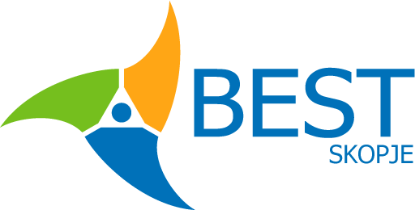

За БЕСТ


Од 1989 па се до денес БЕСТ обезбедува можности за комуникација, соработка и размена на студентите ширум Европа.
Во 33 земји со вкупно 95 Локални БЕСТ Групи, БЕСТ формира студентска мрежа која е константно растечка, добро организирана,
моќна и иновативна. Секојдневниот напредок се должи на околу 4800 студенти кои ентузијастички дејствуваат, а скоро 1 милион
студенти се опфатени од поттикнатите настани и иницијативи.
БЕСТ на студентите им дава можност да го прошират своето знаење за теми кои го надополнуваат нивното образование преку организирање
академски курсеви, инженерски натпревари, симпозиуми за едукација, тренинзи и културни размени.
Од друга страна, БЕСТ исто така се стреми да го прошири пазарот на трудот преку саеми за вработување и кариера,
работилници, воедно и водење на интернационален центар за кариера.
Последно, но не и најмалку важно, БЕСТ има развиено свој систем на обука, па затоа нашите членови исто така ја имаат можноста
да ги подобрат своите вештини и знаења со учество на тренинзи за технички вештини и „soft skills“.

БЕСТ, Борд на Европски Студенти по Технологија, е интернационална непрофитна и неполитичка студентска организација,
организирана и водена целосно од студенти. БЕСТ ги поврзува студентите од 93 технички универзитети во 34 земји во мрежа која
е одржувана преку голем број на заеднички проекти, интереси и пријателства. Секоја година организира преку 120 интернационални
курсеви, семинари и конференции во кои студенти од различни земји учат и разменуваат искуства и идеи.
Наш приоритет е да понудиме високо квалитетни сервиси за студентите низ цела Европа. Така ние ги зближуваме партнерите во триаголникот
„студент - компанија - универзитет“. Како резултат од потребата за поголема размена на студенти, запознавање и соработка на домашните
студенти со колеги од други универзитети и воспоставување понатамошно образование во нивните студии беше создаден Бордот на
Европски Студенти по Технологија - Скопје.